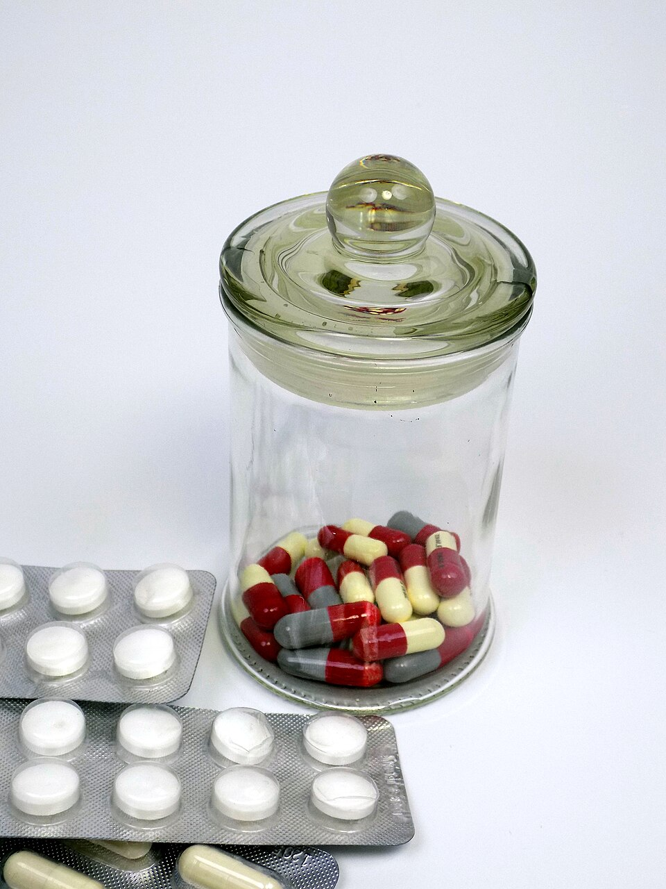

Common types of medicines explained in plain language
Most medicines work by interacting with specific targets in the body — usually proteins called receptors or enzymes. Think of it like a key fitting into a lock: the medicine "key" fits a particular "lock" in your cells and either switches a process on, blocks it, or slows it down. This is why the right dose matters so much: enough keys to do the job, but not so many that they cause unwanted effects.
Medicines reach these targets in different ways. Tablets and syrups are absorbed through the digestive system, creams work directly on the skin, inhalers deliver medicine straight to the lungs, and injections place it directly into the blood or muscle. You can read more about this journey — called pharmacokinetics — on Wikipedia.

Analgesics ease pain and often reduce fever. The most familiar are paracetamol (acetaminophen) and ibuprofen — staples of nearly every home medicine cabinet.
Antibiotics fight bacterial infections. They do nothing against viruses like colds or flu, which is why doctors won't prescribe them for every sniffle. Always finish the full course your doctor prescribes — stopping early helps bacteria become resistant.
Antihistamines calm allergic reactions such as hay fever, hives and insect bites by blocking histamine, the chemical your body releases during an allergic response.
Vaccines are preventive medicines: they train your immune system to recognize a disease before you ever meet it. Community vaccination is one of the greatest public-health success stories in history.
Many neighbors take daily medicines for long-term conditions — for example insulin for diabetes, or ACE inhibitors for high blood pressure. These medicines manage a condition rather than cure it, so taking them consistently is essential.
| Medicine | Type | Commonly Used For | Good to Know |
|---|---|---|---|
| Paracetamol (Acetaminophen) | Analgesic / fever reducer | Headaches, mild pain, fever | Gentle on the stomach, but never exceed the daily limit — it is hard on the liver in overdose. |
| Ibuprofen | NSAID (anti-inflammatory) | Muscle aches, sprains, period pain, fever | Take with food; not ideal for people with stomach ulcers or certain kidney problems. |
| Aspirin | NSAID / blood thinner | Pain, fever; low doses protect some hearts | Not for children under 16 due to the risk of Reye's syndrome. |
| Cetirizine | Antihistamine | Hay fever, allergies, hives | Less drowsy than older antihistamines, but can still cause sleepiness in some people. |
| Loperamide | Anti-diarrheal | Short-term diarrhea relief | Drink plenty of fluids; see a doctor if symptoms last more than two days. |
| Antacids (e.g., calcium carbonate) | Digestive aid | Heartburn, indigestion | Work fast but briefly; frequent heartburn deserves a doctor's visit. |
Remember: "over-the-counter" does not mean "risk-free." Doses differ for children, older adults, and people taking other medicines. When in doubt, ask your pharmacist — it's free advice from a medicines expert.